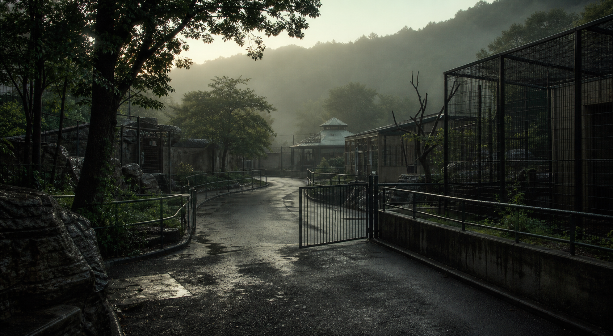

調査対象
飼育日誌、園内放送、順路の3点を軸に資料を読む。
PUBLIC FACE / PRIVATE NOISE
休園日の飼育日誌。公式の表情、検索に残った痕跡、匿名掲示板のざわめきを照合し、公開資料だけで違和感の芯を探してください。

木漏日動物園で、閉鎖中の旧獣舎にだけ給餌予定が登録されていた。公式サイトには改修工事とあるが、飼育員メモには夜間の足音についての短い記述が残る。
あなたは園内資料の確認者として、飼育日誌、工事案内、来園者の写真を照合する。檻の中にいたものではなく、檻を開けた人を探す調査になる。
飼育日誌、園内放送、順路の3点を軸に資料を読む。
公式ページの説明は整っているが、外部に残った断片は同じ出来事を少し違う順番で語っている。
公式、検索、掲示板を横断し、20問調査で答えを段階的に確認する。
GIMMICK LAYER
飼育エリア図と足跡写真を照合する
動物名の分類順を檻番号に変える
逃げた動物ではなく、檻に戻された順番を読む